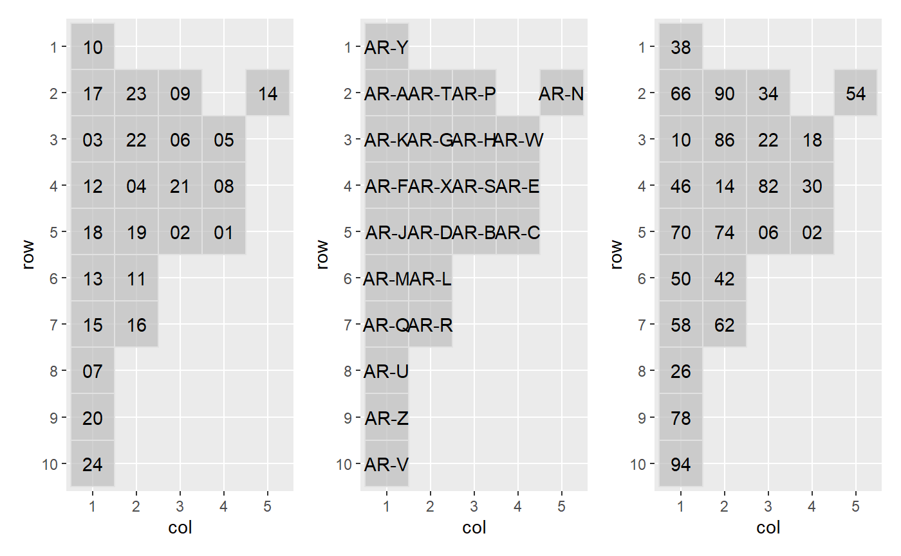

library(geofaceteAR) #> Loading required package: geofacet #> Warning: package 'geofacet' was built under R version 3.6.3 #> Registered S3 method overwritten by 'geofacet': #> method from #> +.gg ggplot2 library(patchwork)
Ejemplo con grilla de Argetnina. Los valores por defecto del código de provincias corresponden al codprov de los escrutinios provisorios de INDRA.
# GRILLA POR DEFECTO get_grid("ARGENTINA") #> name_provincia row col code name #> 1 ARGENTINA 1 1 10 JUJUY #> 2 ARGENTINA 2 3 09 FORMOSA #> 3 ARGENTINA 2 5 14 MISIONES #> 4 ARGENTINA 2 1 17 SALTA #> 5 ARGENTINA 2 2 23 TUCUMAN #> 6 ARGENTINA 3 1 03 CATAMARCA #> 7 ARGENTINA 3 3 06 CHACO #> 8 ARGENTINA 3 4 05 CORRIENTES #> 9 ARGENTINA 3 2 22 SANTIAGO DEL ESTERO #> 10 ARGENTINA 4 2 04 CORDOBA #> 11 ARGENTINA 4 4 08 ENTRE RIOS #> 12 ARGENTINA 4 1 12 LA RIOJA #> 13 ARGENTINA 4 3 21 SANTA FE #> 14 ARGENTINA 5 3 02 BUENOS AIRES #> 15 ARGENTINA 5 4 01 CABA #> 16 ARGENTINA 5 1 18 SAN JUAN #> 17 ARGENTINA 5 2 19 SAN LUIS #> 18 ARGENTINA 6 2 11 LA PAMPA #> 19 ARGENTINA 6 1 13 MENDOZA #> 20 ARGENTINA 7 1 15 NEUQUEN #> 21 ARGENTINA 7 2 16 RIO NEGRO #> 22 ARGENTINA 8 1 07 CHUBUT #> 23 ARGENTINA 9 1 20 SANTA CRUZ #> 24 ARGENTINA 10 1 24 TIERRA DEL FUEGO
En el siguiente ejemplo podemos ver las tres opciones disponibles para el nivel provincial (indra, iso, indec). El primer objeto argentina_indra es similar al anterior, que viene con códigos por defecto. Los dos restantes corresponden a las versiones recodificadas.
# CODIGOS DE INDRA (POR DEFECTO) argentina_indra <- get_grid("ARGENTINA") %>% recode_district(type = "indra") # CODIGOS ISO argentina_iso <- get_grid("ARGENTINA") %>% recode_district(type = "iso") # CODIGOS DE INDEC argentina_indec <- get_grid("ARGENTINA") %>% recode_district(type = "indec")
Imprimimoos los de argentina_indec y observamos los cambios en code:
#> row col name code
#> 1 1 1 JUJUY 38
#> 2 2 3 FORMOSA 34
#> 3 2 5 MISIONES 54
#> 4 2 1 SALTA 66
#> 5 2 2 TUCUMAN 90
#> 6 3 1 CATAMARCA 10
#> 7 3 3 CHACO 22
#> 8 3 4 CORRIENTES 18
#> 9 3 2 SANTIAGO DEL ESTERO 86
#> 10 4 2 CORDOBA 14
#> 11 4 4 ENTRE RIOS 30
#> 12 4 1 LA RIOJA 46
#> 13 4 3 SANTA FE 82
#> 14 5 3 BUENOS AIRES 06
#> 15 5 4 CABA 02
#> 16 5 1 SAN JUAN 70
#> 17 5 2 SAN LUIS 74
#> 18 6 2 LA PAMPA 42
#> 19 6 1 MENDOZA 50
#> 20 7 1 NEUQUEN 58
#> 21 7 2 RIO NEGRO 62
#> 22 8 1 CHUBUT 26
#> 23 9 1 SANTA CRUZ 78
#> 24 10 1 TIERRA DEL FUEGO 94Estos comandos pueden ser utiles para linkear más facilmente una base de datos que estemos usando, con id de distrito especifico, con la grilla correspondiente para un gráfico de ggplot2. De esta forma podemos acomodar las funciones facet con una aproximación geográfica con facet_geode geofacet. Otro ejemplo de esto puede encontrarse en este post.
Todas las funciones de geofacet están disponibles al cargar geofaceteAR. Así, por ejemplo, podemos inspeccionar el diseño de las grillas con grid_preview():
